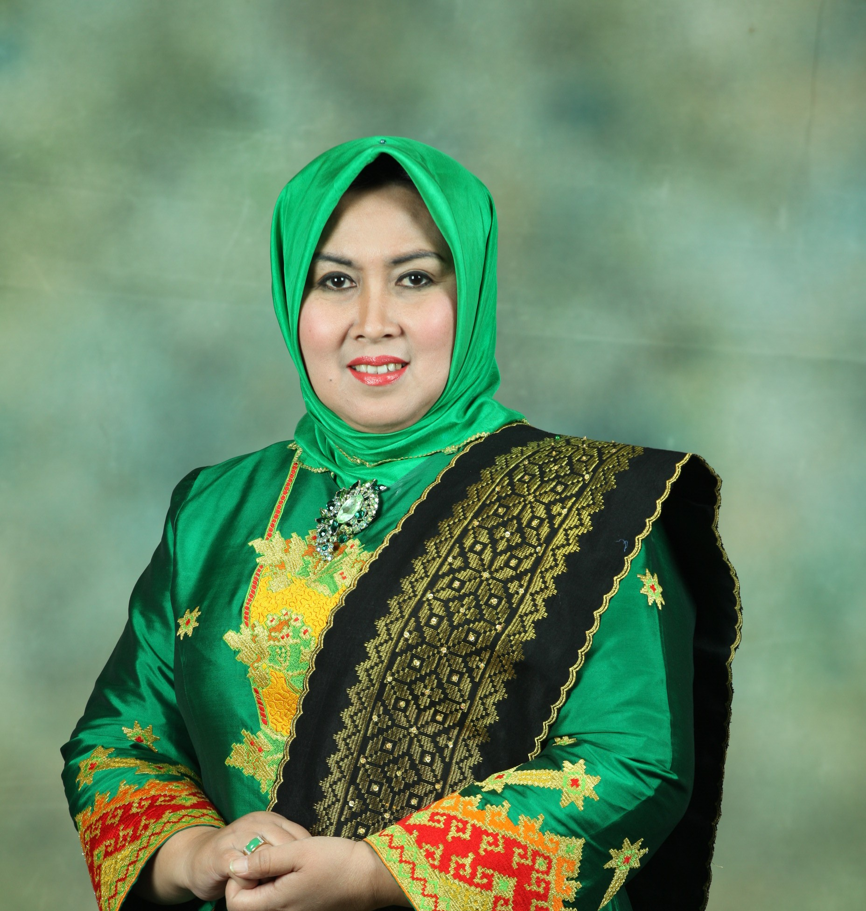

Irvan Herman Abdullah memiliki rekam jejak kepemimpinan lengkap sejak masa kecil. Ia dikenal sebagai sosok yang memiliki integritas, amanah, cerdas, dan berani. Irvan Herman memiliki kemampuan membuat perubahan, inovatif, memimpin di saat krisis, dan bisa membuat kebijakan yang tepat serta cepat. Menjiwai persoalan di akar rumput rakyat dan menguasai medan di arena percaturan dunia.
Memiliki rekam jejak kepemimpinan lengkap sejak masa kecil dengan integritas tinggi.
Menjiwai persoalan di akar rumput rakyat dan menguasai medan percaturan dunia.
Memiliki kemampuan membuat perubahan dan memimpin dengan tenang di saat krisis.
Dikenal sebagai sosok yang mampu membuat kebijakan yang tepat, cepat, dan terukur.
Berpengalaman merangkul berbagai elemen masyarakat untuk mencapai tujuan bersama.

Herman Abdullah
Ayah Irvan Herman

Evi Meiroza
Ibu Irvan Herman